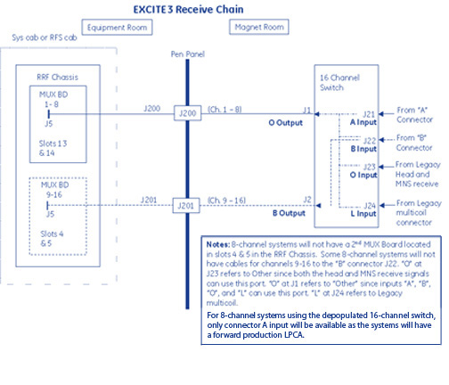
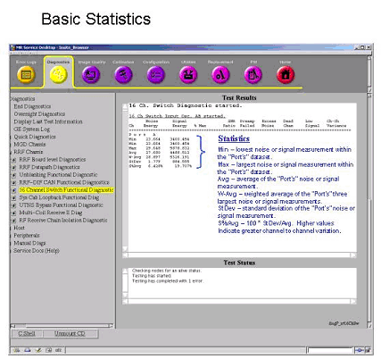
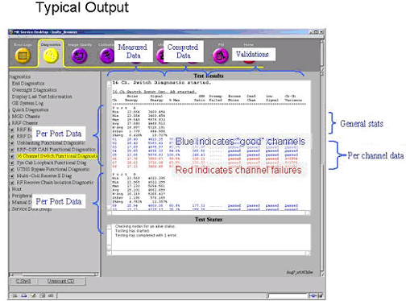

Proprietary to General Electric Company
Direction 5440000, Rev# 5
Signa HDxt Service Methods
Module Version 3.0, Version Date 11/25/08
Proprietary to General Electric Company |
Diagnostics >> RRF Chassis >> 16-channel Switch Functional Diagnostic
The purpose of the 16-channel Switch Functional Diagnostic is to identify RF signal problems with receive signal paths from the 16-channel switch. This test is functionally identical to the 16-channel Switch Datapath Diagnostic, but the functional diagnostic allows for more test options and gives more detailed results in the test's main screen.
The 16-channel Switch diagnostic utilizes the oscillators inside the 16-channel Switch. Noise (oscillators off) and Signal (oscillators on) measurements are performed for a variety of tests that are based on port selection.
Oscillator control is achieved via the SCP to the Driver link via CAN communications, then to the 16 channel switch. The signal path is routed from the 16-channel switch to the RRF Chassis. Within the chassis, the signal is routed through the MUX, UTNS, Receiver, and RRF-DIF boards. Lastly, signal is routed to the IRF I/O, IRF, and then the DRF via the receive bus.
The 16-channel Switch diagnostic should be performed in conjunction with the System Cabinet Loopback diagnostic. Refer toTable 1 to analyze the results of these two diagnostics. Because hardware for the diagnostics is similar, a truth table can be used to isolate problems.
Fault Isolation between the LPCA and the input ports of the 16-channel Switch should utilize the Multi-Coil Receive diagnostic.
Further isolation can be accomplished running the RRF Receive Chain FRU Isolation diagnostic.
16 Channel Switch
Cabling between the 16-channel Switch and the Mux Board(s)
Receive Chain (MUX, UTNS, Receiver boards)
The 16-channel Switch diagnostic should be performed in conjunction with the System Cabinet Loopback diagnostic.
No coils shall be connected to the LPCA
Illustration 1: Diagnostic Block Diagram

Illustration 2: Receive Chain

Select 16-channel Functional diagnostic.
In some cases, running a subtest is the best way to isolate failures. For descriptions of subtests see Section 7.
Test Input Osc A and B Ports
Test Input Osc O and B Ports
Test Input Osc L and B Ports
Test Input Osc B and -- Ports
Test Output Osc O and B Ports
Click [Run].
Results for this diagnostic are displayed as pass/fail information.
In the event of an error, consult the summary file:
/usr/g/service/datamine/rxOsc_Summary.log
Examine the results and take the appropriate action. For assistance with analyzing the results, refer to Illustration 3.
| NOTE: | The Test Options settings should
not be changed from their default settings unless instructed to do
so by a GE Healthcare engineer. There are very few circumstances when
these settings ever need to be changed. When the Constraints option is selected, the test will run with coils. This could adversely affect test results. |
| NOTE: | Because values for this test can vary widely from system to system, benchmarks are specific to your system type. When a test fails, therefore, the log will indicate the tolerance level for the failed test. |
| NOTE: | When 16-channel depopulated switch hardware is installed, only A Port testing will be performed. |
Illustration 3: Channel Data

Illustration 4: Basic Statistics

Illustration 5: Typical Output

The diagnostic will return PASS or FAIL. The GE Sys Log will identify errors. The directory, /usr/g/service/datamine, contains files detailed results files and the rxOsc_Summary.log summary file. Detailed results are logged in the summary file /usr/g/service/datamine/rxOsc_Summary.log.
Actual signal data is logged in data files within /usr/g/service/datamine.
Illustration 6: Summary File

When executed in conjunction with the System Cabinet Loopback diagnostic, system problems can be isolated to the (1) the signal source – the exciter; (2) the RRF Chassis’ receive chain – the MUX, UTNS, and receiver boards; or (3) the 16 Channel switch, cabling & hardware, and input port on the MUX boards.
Table 1: Results Table
| Sys Cab Loopback | 16-channel Switch | Results/Action |
|---|---|---|
| Failed | Failed | Problem within the RRF Chassis. Isolate the receive chain. |
| Failed | Passed | Problem with signal source for the Sys Cab Loopback. Check the exciter, cabling, and possible RF Chassis hardware such as power, backplane, etc. |
| Passed | Failed | Problem isolated to the 16-channel Switch, passive components back to the RRF Chassis, or possibly a bad Mux board. |
| Passed | Passed | Receive chain from the 16-channel Switch appears to be functioning. Run the Multi-coil Receive diagnostic to examine the signal path from the LPCA to the 16-channel Switch. |
Output Subtest
If there is a failure after running the primary test, run the output subtest. If this subtest passes, then you can know that the failure did not occur between the 16-channel Switch and the System Cabinet.
Test Output Osc O and B Ports
Input Subtests
If the output subtest passes and any of the input subtest fail, replace the 16-channel Switch.
If the output subtest fails and these input subtests fail there is probably a failure between the 16-channel Switch and the LPCA. To identify the failure run the MCR Diagnostic.
Test Input Osc A and B Ports
Test Input Osc O and B Ports
Test Input Osc L and B Ports
Test Input Osc B and -- Ports
Test Output Osc O and B Ports
| NOTE: | When 16-channel depopulated switch hardware is installed, only A Port testing will be performed. |
Fault Isolation between the LPCA and the input ports of the 16-channel Switch should utilize the Multi-coil Receive diagnostic.
Further isolation can be accomplished running the RRF Receive Chain FRU Isolation diagnostic.
None